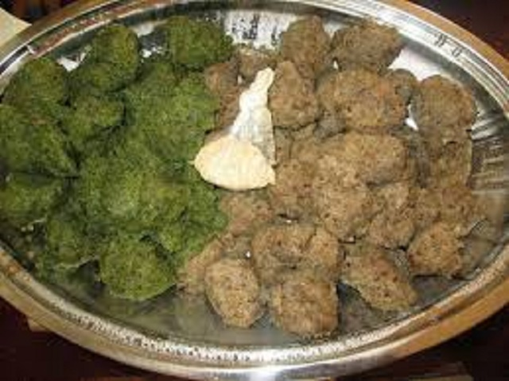
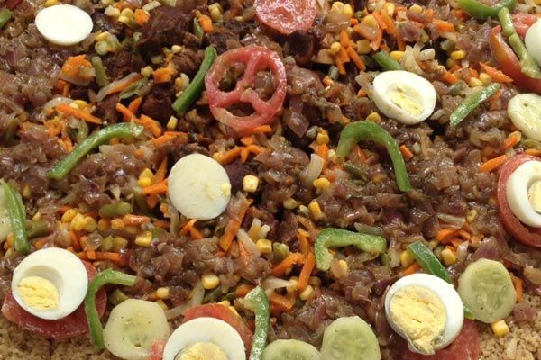

Faso Ri Nondo
Accueil
Les recettes
Soumettre une recette
LES METS DE LA REGION DU SUD-OUEST

X
Nom :Foni gnonkon
Recettes :
250 g de fonio pre cuit
300 g de poudre d’arachide cru
1 kg de feuilles fraîches de haricot piler
1 bouquet de persil frais
5 cuille re es a soupe de potasse(de pend de la concentration)
1/2 cuille re e a cafe de sel iode
1/4 litre d’huile
10 gousses d’ail frais

X
Nom :Fonio au gras
Recettes :
500 g de fonio pre cuit
250 g de viande crue
02 tas de poivron vert
03 bulbes d’oignons frais
04 tomates fraî ches
10 gousses d’ail frais cru
2 tas de feuilles fraî ches de persil
Un tas d’épice
1/2 cuille re e a cafe de sel iode
6 cuille re es a soupe d’huile